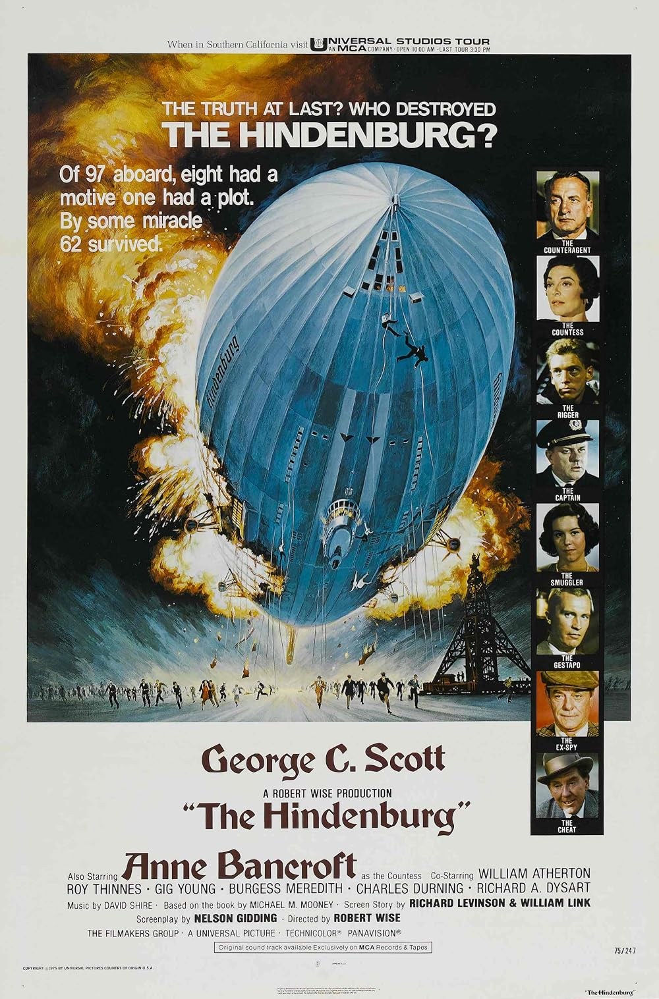

The Hindenburg
48th Academy Awards
(Oscars 1976)
3 Nominations, 2 Awards*
| Nominations | ||
|---|---|---|
| Category | Nominees | Result |
| Cinematography | Robert Surtees | Nominated |
| Art Direction | Edward Carfagno and Frank McKelvy | Nominated |
| Sound | Don K. Sharpless, John A. Bolger, Jr., John Mack, and Leonard Peterson | Nominated |
| Special Achievement Award (Visual Effects) | Albert Whitlock and Glen Robinson | Won |
| Special Achievement Award (Sound Effects) | Peter Berkos | Won |